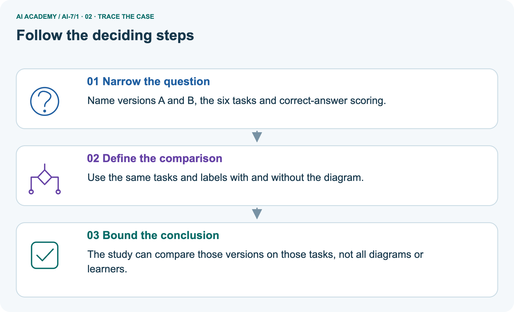
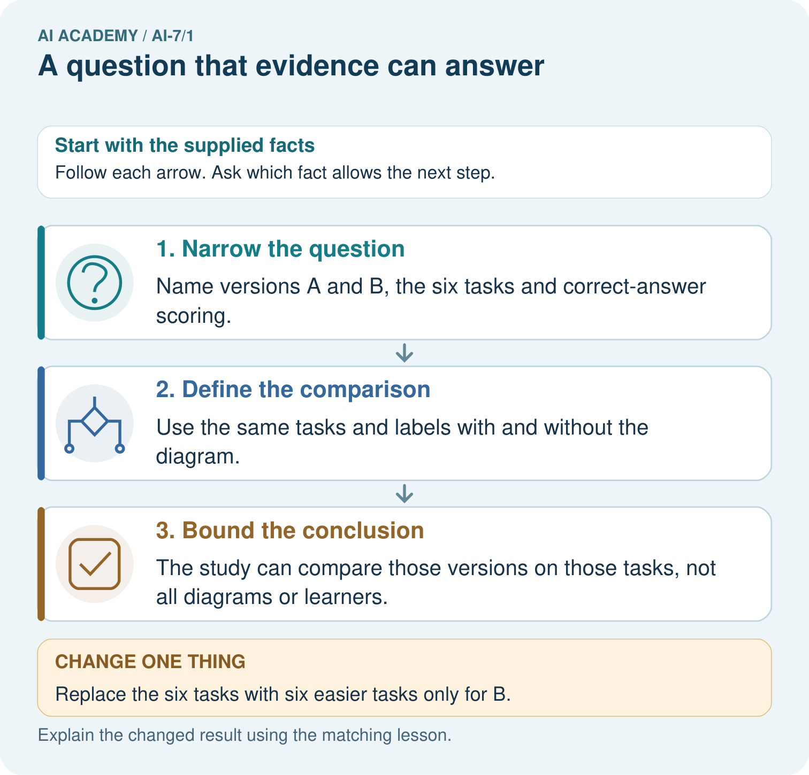
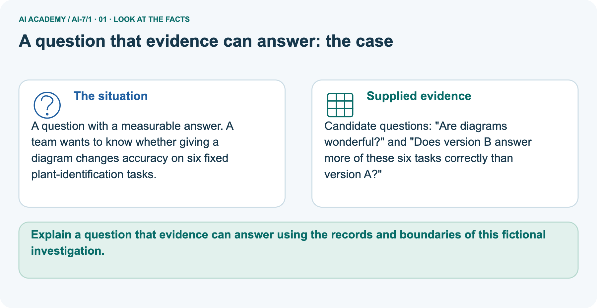
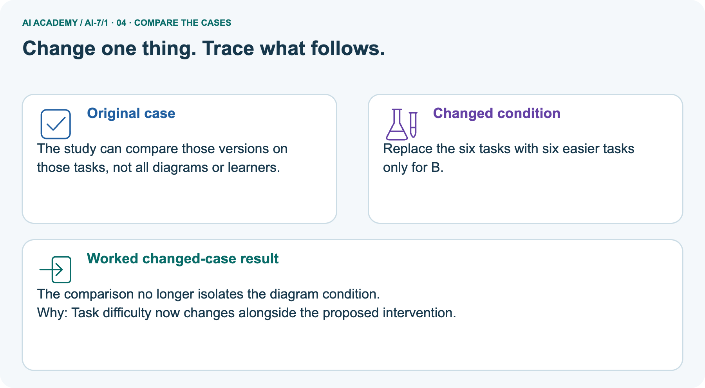
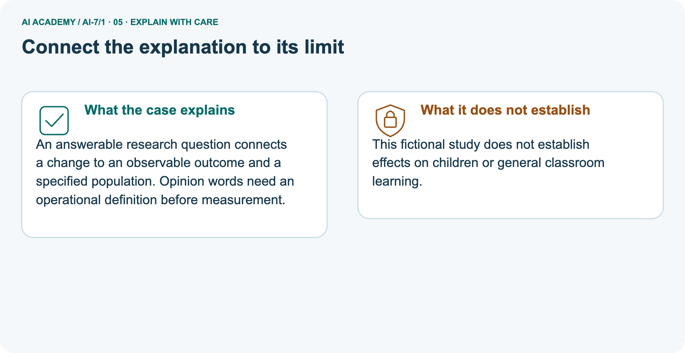
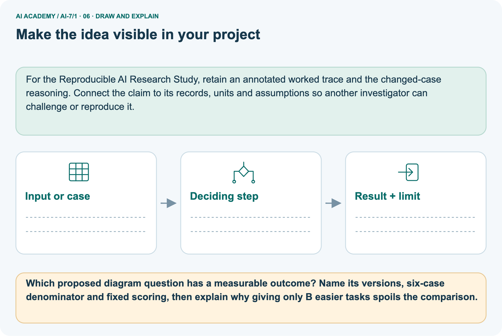

AI Academy · Level 7 · Grade 12 · Week 1 · Teacher guide
A question that evidence can answer
Learn to understand, design, build, test and explain AI systems responsibly.
Project: Reproducible AI Research Study
THE CONNECTED WEEK
Ask what observation would answer this question and under which fixed conditions.
Teach measurable outcomes and honest study scope before inferential claims.
Keep one habit: Model broad-to-bounded question → inspect supplied rankings → contrast missing diagram results → assess ten-request comparison → retain evidence-status distinctions.
Main lesson · Section 1
Prepare the connected research investigation
Keep modelling, shared practice and independent evidence distinct.
Target and main teaching plan
Primary target: Explain the mechanism and terminology of a question that evidence can answer
| Session | Sequence and minutes | Resources |
|---|---|---|
| Session 1 · Understand · 45 min | 0–7: recall and prerequisite; 7–15: inspect the concrete case and predict; 15–30: teacher models the worked trace; 30–40: learners explain a step using the text and visual; 40–45: check the core idea. | Use Your mission, Notice the evidence, See how it works, Words that unlock the idea and Follow a worked example; record the brief recall in the workbook. |
| Session 2 · Practise · 45 min | 0–5: retrieve the procedure; 5–15: W2 completion practice; 15–23: explain and check with a partner; 23–30: each learner answers the misconception check; 30–40: targeted reteaching or a harder variation; 40–45: prepare the investigation. | Use Find and repair a mistake, Practise together and Run the investigation, with workbook W2 and Individual reasoning check. |
| Session 3 · Investigate and transfer · 45 min | 0–5: retrieve the decision rule; 5–20: investigate or trace; 20–30: start the independent case; 30–38: connect the project; 38–43: act on feedback; 43–45: plan the return check. | Use Run the investigation, Build your understanding, Connect your project and Show what you know. Reserve further time for the full task set. Use a code example only where one is actually supplied. |
This is a starting allocation of 135 minutes, not a validated duration. Preserve all named topics. Schedule extra time for connected examples, the full investigation, independent cases and project building.
Repeated copies of a case share one recorded attempt; they are not new evidence.
Preparation and prerequisite
Lesson and workbook; paper and pencil
Calculator and optional local Python 3 for arithmetic; no live API or private data
Prepare the fresh retry separately and withhold its solution until after collection
A result depends on the inputs, procedure and conditions that produced it. Preserve data roles and distinguish observed outcomes from predictions or unmeasured conditions.
If the prior concept cannot be explained, use a short retrieval activity before this chapter.
Opening retrieval
Without opening the old lesson, explain one key idea from Engineering demonstration and defense. Give an example and a mistake that the idea helps you avoid.
Look for: Explain the mechanism and terminology of engineering demonstration and defense
Reference example, not the only acceptable wording: Teacher explanation: An engineering defense demonstrates correct operation and bounded failure with an inspectable implementation, tests and runbook.
Present requirements, architecture, contracts, permissions, evaluation, resource measurements and recovery. Show one supported case, one legitimate review and one denied operation.
State what was mocked and what remains untested.
Pictured end goal
Explain a question that evidence can answer using the records and boundaries of this fictional investigation.
Earlier wording, alternatives and picture transcripts
Teach the learning cycle
Retrieval answer guidance
Engineering demonstration and defense
Compact alternative: two 45-minute sessions for the core explanation and W1–W5 only. The main plan uses three sessions; schedule further time for the complete investigation, project, visual journey and any code examples. A research question identifies an outcome, comparison and conditions that evidence could answer. A broad aspiration needs narrowing before a study.
Use the supplied constructed scenarios to make the mechanism inspectable. Collect W4 before sharing solutions.
Students should name intermediate evidence and limitations; classroom pacing and learning effectiveness remain unvalidated.
Outcomes
Explain the mechanism and terminology of a question that evidence can answer
Apply the stated procedure to a new case with a traceable result
Identify an assumption or limitation and design a revealing follow-up
Preparation
Prerequisite answer
End goal for the pictorial case
This added worked case illustrates the week’s main idea. Retain all original and connected topics; schedule its practice within the teaching cycle.
Main lesson · Section 2
Teach operational definitions and claim scope before statistical inference
Keep the supplied practice snapshot, planned reserved study and diagram design separate.
Definitions and complete fictional question protocol
A research question identifies an outcome, comparison and conditions that evidence could answer. A broad aspiration needs narrowing before a study.
For fictional classroom retrieval, ask whether method B returns more relevant records than lexical baseline A on a reserved judged query set at cutoff 3. Define eligible corpus and relevance rules before running.
| Question element | Complete added fictional practice protocol |
|---|---|
| Versions and comparison | Baseline A and method B; their ranking outputs are supplied snapshots, not implemented algorithms |
| Cases | Fixed matched query IDs Q1–Q5, same for both versions |
| Eligible corpus | c1 contains R1–R10 only |
| Outcome | Number of supplied relevant records in the first three, averaged over five queries |
| Scoring rule | Fixed supplied relevance sets; exactly three unique eligible records per query |
| Relevance sets | Q1 R1/R2; Q2 R3; Q3 R4/R5; Q4 R6; Q5 R7/R8 |
| What is held fixed | Case IDs, corpus/version, cutoff 3 and relevance labels |
| Evidence status | Added constructed snapshots for worked practice; no live retrieval or real annotator judgments |
| Reserved evaluation | A future unseen judged set must remain separate; these revealed examples are not fresh reserved cases |
| Claim boundary | Compare supplied outputs on these queries only; no universal usefulness, deployment impact, causal mechanism or child-learning claim |
Main constructed count ledger and checked reasoning
| Query | Supplied relevant IDs | A top three / relevant count | B top three / relevant count |
|---|---|---|---|
| Q1 | R1, R2 | R1, R9, R10 / 1 | R1, R2, R9 / 2 |
| Q2 | R3 | R3, R9, R10 / 1 | R3, R9, R10 / 1 |
| Q3 | R4, R5 | R4, R9, R10 / 1 | R4, R5, R9 / 2 |
| Q4 | R6 | R6, R9, R10 / 1 | R9, R10, R8 / 0 |
| Q5 | R7, R8 | R7, R9, R10 / 1 | R7, R8, R10 / 2 |
| Five-query mean | Same fixed labels and corpus | 5/5 = 1 relevant record | 7/5 = 1.4 relevant records |
Main question compares top-three relevance under fixed five-query/c1 labels, not universal usefulness. Added practice snapshots supply A counts 1/1/1/1/1 and B 2/1/2/0/2, means 1 versus 1.4, with Q4 worse. These are constructed labels/rankings, not live retrieval or human judgments, and revealed practice is not a reserved test set.
Picture six-task diagram comparison has no outcomes supplied; measurable question does not imply B wins. Easier B-only tasks confound difficulty with version. Selected ten-request case: ask whether B lowers specified latency while preserving correctness on those same requests; state timing boundary, matched inputs and scoring. No population-wide or child-learning claim follows.
A question that evidence can answer — evidence trace
Guided: Narrow to relevant retrieval at a declared cutoff on those queries. The supplied records cannot answer universal usefulness or deployment impact.
Qualification: A measurable narrow question is not evidence of its answer.
Exit: accept a concrete variation with its predicted outcome and a stated condition that would challenge the mechanism; reject a claim resting on unmeasured evidence.
Proposal says prove AI is useful; available records are retrieval results for five room queries.
Narrow to relevant retrieval at a declared cutoff on those queries. The supplied records cannot answer universal usefulness or deployment impact.
Compare the intermediate evidence with the final statement. Explain why each number or decision follows from the stated inputs.
The conclusion belongs to this scenario and procedure; changing the inputs, evaluation population or authority can change what it establishes. Retain the raw record so a later revision can be compared honestly.
Measurement, confounding and evidence-status probes
| Research-question probe | Expected interpretation |
|---|---|
| “Is AI useful?” | Needs task, comparison, measurable outcome and conditions |
| A/B rankings on same five queries at cutoff 3 | Can compare relevant counts under supplied labels |
| B wins mean but loses Q4 | Report both; mean does not mean every case improved |
| B only receives easier tasks | Comparison confounds version with task difficulty |
| Rubric/corpus changes between versions | Different measurement conditions require review |
| No outcome records yet | Question can be designed; no empirical winner can be stated |
| Practice examples already revealed | Do not call them unseen reserved evaluation |
| Five or six fictional cases | No population-wide usefulness or real learner effect follows |
| A better score is observed | Does not by itself identify which internal mechanism caused the change |
Separate six-task diagram comparison and missing results
A question with a measurable answer. A team wants to know whether giving a diagram changes accuracy on six fixed plant-identification tasks.
Candidate questions: "Are diagrams wonderful?" and "Does version B answer more of these six tasks correctly than version A?"
The picture asks a separate diagram question: version A without the diagram versus B with it on the same six fixed plant-identification tasks and answer labels. “Are diagrams wonderful?” has no defined measurement here. “Does B answer more of these six correctly than A?” specifies versions, outcome and denominator. No actual answers or counts are supplied for the picture, so do not claim B wins.
If only B receives easier tasks, version and difficulty change together; the resulting difference cannot isolate the diagram comparison. Even a matched six-task result would not establish all diagrams’ value or effects on children’s learning.
Picture trace and easier-task key



Read the picture one step at a time
An answerable research question connects a change to an observable outcome and a specified population. Opinion words need an operational definition before measurement.
This fictional study does not establish effects on children or general classroom learning.
Change: Replace the six tasks with six easier tasks only for B.
Prediction: The comparison no longer isolates the diagram condition.
Reason: Task difficulty now changes alongside the proposed intervention.
Earlier wording, alternatives and picture transcripts
Begin by writing the question the procedure is intended to answer. Identify the information already supplied, the information it will produce and the information still missing.
These are constructed classroom examples; they do not require live accounts, private records or an external service. Do not treat a plausible explanation as a measured outcome.
Before applying the procedure, write its units, denominator or decision boundary where relevant. A partner should be able to repeat each step using the same inputs.
If a required input is absent or violates the stated contract, record that condition explicitly instead of quietly replacing it with a convenient value.
| Term | Meaning |
|---|---|
| Research question | A bounded question tied to observable evidence |
| Outcome | The quantity or behaviour being measured |
| Scope | The conditions covered by a question |
Model the reasoning aloud
Use the complete worked example below before asking learners to complete W2. Reveal a small part, invite a prediction, then explain the deciding step.
These teacher notes contain solutions; do not reveal the independent case answer during modelling.
| Thinking move | Teacher prompt |
|---|---|
| Plan | What is given? What is the question? Which procedure fits these facts? |
| Do | Point to each input and intermediate step in the worked trace. Name the rule that allows the next step. |
| Check | Does the output answer the question? Which assumption or limitation prevents a larger claim? |
Use the diagram and verbal explanation together. Ask learners to match a sentence to a specific visual step; do not assign learners fixed visual or auditory learning styles.
A pictorial worked case: A question that evidence can answer
The facts we will use



Why this result follows
What this example does not establish
Change one thing in the pictured case
Ask while showing the picture
Cover the result. Ask learners to name the inputs and predict the next step. Uncover one step, connect the icon to the actual procedure, and explain its evidence. Then change the supplied condition and compare.
The picture is a representation; it does not document execution of a real AI model.
Main lesson · Section 3
Model a step,then remove help
Collect each learner’s reasoning before showing a key.
Current completion task and checked reasoning
Completion task: Proposal says prove AI is useful; available records are retrieval results for five room queries. Show the intermediate steps and give the conclusion with its scope.
Teacher check: Teacher explanation: Narrow to relevant retrieval at a declared cutoff on those queries. The supplied records cannot answer universal usefulness or deployment impact.
Start by identifying the given inputs together. Leave the intermediate steps blank. If needed, model one step, then withdraw that help on the next step. Move to a full trace only when the partial trace is understood.
For partners, alternate explainer and checker; collect a response from every learner before discussion.
Individual misconception check
Use the worked case for A question that evidence can answer. Proposed explanation: “The worked result establishes every future case”. Decide whether this explanation is supported.
Point to the step or supplied fact that decides; explain your repair if needed.
Expected correction: A measurable narrow question is not evidence of its answer.
Collect explanations, not only yes/no votes. If a misunderstanding is common, re-model the relevant step for the class.
If it affects a few learners, give a short targeted group explanation while others solve a more demanding variation.
Pictured reasoning and changed case
Which proposed diagram question has a measurable outcome? Name its versions, six-case denominator and fixed scoring, then explain why giving only B easier tasks spoils the comparison.
Name versions A and B, the six tasks and correct-answer scoring. Use the same tasks and labels with and without the diagram. The study can compare those versions on those tasks, not all diagrams or learners.
Changed case: The comparison no longer isolates the diagram condition. Task difficulty now changes alongside the proposed intervention.
Changed-case reasoning: The comparison no longer isolates the diagram condition. Task difficulty now changes alongside the proposed intervention.
Collect each learner’s explanation before discussion. Use the first missing connection between input, deciding step and result to choose support. This question is worked-case practice, not fresh mastery evidence.
Accessible support and extension
Use the worked example in Sections 3 and 6. Collect a prediction before revealing its result; ask the learner to point to each intermediate fact.
Provide an input/procedure/result/limit frame and a calculator when needed. Ask students to identify the first step before completing the whole trace.
Extension: compare two concrete variants of this mechanism while holding unrelated conditions fixed; report both successful and unsuccessful outcomes.
Earlier wording, alternatives and picture transcripts
| Time or stage | Teacher action |
|---|---|
| Session 1: 0–7 minutes | Retrieve the prerequisite; identify the input, procedure and evidence source. |
| 7–18 minutes | Explain See how it works and Words that unlock the idea. Complete W1 with a mechanism-based explanation. |
| 18–32 minutes | Trace the declared procedure and worked case. Complete W2, recording intermediate steps. |
| 32–45 minutes | Discuss the diagram with the worked input; use W3 to distinguish measured claims and limitations. |
| Session 2: 0–8 minutes | Retrieve the worked reasoning and collect the guided response before discussing it. |
| 8–20 minutes | Compare a proposed boundary variant with the original case; identify what remains fixed. |
| 20–35 minutes | Collect W4 independently. Require the procedure trace and the bounded conclusion. |
| 35–45 minutes | Use W5 and exit responses for feedback. Administer the fresh retry after feedback and preserve both attempts. |
Reduce help deliberately
Individual reasoning check
Pictorial practice question
Reasoned teacher answer
Main lesson · Section 4
Run the complete supplied investigation
Separate predictions,actual runs and paper traces.
Complete inputs,expected results and limits
Main bounded top-three question uses matched cases/corpus/labels; constructed practice means A 1 and B 1.4 with Q4 worse. Picture measurable six-task diagram question has no actual results; easier B-only tasks spoil the matched comparison. Selected independent case asks whether B lowers latency while preserving correctness on those ten requests, with explicit timing boundary, matched inputs and scoring details.
No broader population or child-learning conclusion is supported.
Diagnose the current misconceptions
The worked result establishes every future case: A measurable narrow question is not evidence of its answer.
A missing input may be replaced without recording the change: A replacement changes the evidence or contract. Record the change and its justification; do not silently turn unknown into a measured value.
Repeating an assessed case is new independent evidence: A replay checks consistency. An example used for feedback or revision cannot later be described as untouched final evaluation.
Use Section 9 for the evidence ledger. Add a boundary or missing-input case and record the expected response before checking. More successful repeats of one case do not establish wider coverage.
Choose accessible support
| What the response shows | Next teaching action |
|---|---|
| Missing or misread facts | Read the case aloud, mark supplied versus unknown facts, and let the learner restate it. |
| Wrong procedure | Return to the deciding step in the worked case. Contrast it with the proposed incorrect explanation. |
| Arithmetic or implementation error | Trace intermediate values or lines; preserve the first mismatch and retry that step. |
| Correct result without a reason | Ask for a trace and a changed case before marking independent understanding. |
| An unsupported wider claim | Ask which supplied evidence supports the claim and which further observation would be needed. |
Offer an oral explanation, drawing, enlarged visual or fewer examples when that removes a reading/writing barrier. Keep the same reasoning goal.
Stretch secure learners by changing a boundary or assumption and asking them to defend the effect, not simply by assigning more of the same questions.
Earlier wording, alternatives and picture transcripts
Match the support to the first error
Main lesson · Section 5
Assess the new research scenario
Keep the selected answer private until after a first attempt.
Selected independent task and checked answer
Selected case: You have response times and correctness for two lookup procedures on ten fictional requests. Write a bounded question and one missing detail.
Teacher explanation: Ask whether B lowers latency while preserving correctness on those ten cases; specify timing boundary, matched inputs and scoring. No population-wide claim follows.
Judge explanation,trace and limits
| Dimension | Evidence required |
|---|---|
| Explanation | Names the applicable idea or procedure and ties it to the supplied facts. |
| Trace and result | Preserves the given inputs and shows the relevant intermediate steps; distinguishes a prediction from an observed execution. |
| Limits | States the assumptions, missing evidence or conditions under which the result would change. |
Record each dimension as not yet, with support, or independent. Accept a valid alternative procedure with a defensible trace.
Do not penalise an honestly recorded model failure if the learner correctly explains its evidence and limits.
Give one usable repair
Name the earliest unsupported step and give one action to repair it. Have the learner make that repair now and explain why. Then assess the relevant skill on a fresh, fully specified case.
Confirm it was not previously practised with feedback; solve and check the new case before assigning it. A follow-up design prompt is a starting brief, not automatically an equivalent test.
W1 Explain the mechanism
Explain the weekly mechanism in your own words. Use the worked scenario to name its input, decision rule and output.
Teacher explanation: A research question identifies an outcome, comparison and conditions that evidence could answer. A broad aspiration needs narrowing before a study. For fictional classroom retrieval, ask whether method B returns more relevant records than lexical baseline A on a reserved judged query set at cutoff 3. Define eligible corpus and relevance rules before running.
W2 Trace the worked case
Proposal says prove AI is useful; available records are retrieval results for five room queries. Show the intermediate steps and give the conclusion with its scope.
Teacher explanation: Narrow to relevant retrieval at a declared cutoff on those queries. The supplied records cannot answer universal usefulness or deployment impact.
W3 Audit the limit
A report omits this qualification: A measurable narrow question is not evidence of its answer. Explain how omitting it could change a reader's interpretation, and write an accurate replacement.
Teacher explanation: A measurable narrow question is not evidence of its answer.
State the observed result separately from the unverified or out-of-scope claim; preserve the original evidence rather than inventing a missing fact.
W5 Design a revealing follow-up
For the worked scenario, propose one additional case that could reveal a failure, describe its expected outcome before running it, and explain what would need to remain fixed for a fair comparison.
Do not reuse W4 as a new final test after receiving feedback.
Teacher explanation: Accept a concrete variant of the worked input or a missing/conflicting/boundary condition, with an expectation derived from the declared procedure.
Require preserved settings, original outputs and data roles. A measurable narrow question is not evidence of its answer. The new case should test this particular mechanism rather than merely restate the original result.
Earlier wording, alternatives and picture transcripts
Guided and exit questions
Guided: Narrow to relevant retrieval at a declared cutoff on those queries. The supplied records cannot answer universal usefulness or deployment impact.
Qualification: A measurable narrow question is not evidence of its answer.
Exit: accept a concrete variation with its predicted outcome and a stated condition that would challenge the mechanism; reject a claim resting on unmeasured evidence.
W1 Explain the mechanism
W2 Trace the worked case
W3 Audit the limit
W4 Apply a new case independently
You have response times and correctness for two lookup procedures on ten fictional requests. Write a bounded question and one missing detail.
Teacher explanation: Ask whether B lowers latency while preserving correctness on those ten cases; specify timing boundary, matched inputs and scoring. No population-wide claim follows.
W5 Design a revealing follow-up
Independent assessment and fresh retry
W4: Ask whether B lowers latency while preserving correctness on those ten cases; specify timing boundary, matched inputs and scoring. No population-wide claim follows. Require intermediate reasoning and the stated scope.
Fresh retry: You have citations and support judgments for six outputs. Expected reasoning: Ask whether the method improves claim support against a stated baseline on those six outputs; specify judgment rules.
If students need support, record it and reassess with another new case rather than awarding independence to a copied answer.
Assess independent transfer
Selected case answer
Feedback that the learner uses
Main lesson · Section 6
Connect, support and revisit research reasoning
Use saved evidence and assumptions to choose the next question.
Project and next-week bridge
Add a labelled a question that evidence can answer evidence sheet to Reproducible AI Research Study. Show how you can explain the mechanism and terminology of a question that evidence can answer.
Use the supplied fictional case and keep its inputs, intermediate steps, calculation or prediction, and limitation. Connect this record to last week’s record; a matching answer without a trace is insufficient.
Provide an input/procedure/result/limit frame and a calculator when needed. Ask students to identify the first step before completing the whole trace.
Extension: compare two concrete variants of this mechanism while holding unrelated conditions fixed; report both successful and unsuccessful outcomes.
Next connection: Reading a research claim. Preserve the current case record and retrieve its evidence boundary before moving on.
Retain the project ledger and assess a changed case after support. Check the relevant prerequisite before carrying this component forward.
For the Reproducible AI Research Study, retain an annotated worked trace and the changed-case reasoning. Connect the claim to its records, units and assumptions so another investigator can challenge or reproduce it.
Delayed return and support record
Suggested return points in this level: ai-7/2, ai-7/4, ai-7/7. Use actual classroom dates, adjusting for holidays and gaps. One, three and six teaching weeks are scheduling choices, not a claimed optimal spacing.
At a delayed check, ask for the idea from memory and a changed application. Compare with the earlier independent response and record support used.
For a new level, revisit the previous capstone before checking the new prerequisites.
| Record | Teacher evidence |
|---|---|
| Learner code and date | |
| Concept and case used; prior exposure | |
| Explanation / trace / limits | |
| Support and first repair | |
| Changed case and delayed outcome | |
| Next teaching action |
Use the evidence to choose reteaching or the next step. A completed page, confidence rating or attractive project does not by itself demonstrate understanding.
Earlier wording, alternatives and picture transcripts
Plan the delayed return
Project evidence from this case
Reference bank and extra practice
Choose the reference that helps your next step.
Reference · Alternative planning checklist
Reference · Section 7
Reference · Alternative planning checklist
Use alongside the main route when helpful.
Planning,assessment and project reminders
Teaching target: Explain the mechanism and terminology of a question that evidence can answer
Prepare the labelled worked-case picture, the matching workbook, fictional input cards and a place for individual responses. Check a local Python 3 environment before class; have a paper-trace version ready.
| Session | Plan | Resources |
|---|---|---|
| Session 1 · Understand · 45 min | 0–7: recall and prerequisite; 7–15: inspect the concrete case and predict; 15–30: teacher models the worked trace; 30–40: learners explain a step using the text and visual; 40–45: check the core idea. | Use Your mission, Notice the evidence, See how it works, Words that unlock the idea and Follow a worked example; record the brief recall in the workbook. |
| Session 2 · Practise · 45 min | 0–5: retrieve the procedure; 5–15: W2 completion practice; 15–23: explain and check with a partner; 23–30: each learner answers the misconception check; 30–40: targeted reteaching or a harder variation; 40–45: prepare the investigation. | Use Find and repair a mistake, Practise together and Run the investigation, with workbook W2 and Individual reasoning check. |
| Session 3 · Investigate and transfer · 45 min | 0–5: retrieve the decision rule; 5–20: investigate or trace; 20–30: start the independent case; 30–38: connect the project; 38–43: act on feedback; 43–45: plan the return check. | Use Run the investigation, Build your understanding, Connect your project and Show what you know. Reserve further time for the full task set. Use a code example only where one is actually supplied. |
Before class, solve the supported practice: Proposal says prove AI is useful; available records are retrieval results for five room queries. Show the intermediate steps and give the conclusion with its scope.
Reasoned practice answer: Teacher explanation: Narrow to relevant retrieval at a declared cutoff on those queries. The supplied records cannot answer universal usefulness or deployment impact.
Check every learner before discussion: Use the worked case for A question that evidence can answer. Proposed explanation: “The worked result establishes every future case”. Decide whether this explanation is supported.
Point to the step or supplied fact that decides; explain your repair if needed.
Misconception repair: A measurable narrow question is not evidence of its answer.
Support: read the exact case aloud, enlarge the labelled picture, supply input cards and model only the first deciding step. Accept a spoken explanation or drawing; retain the reasoning goal.
Extension: Replace the six tasks with six easier tasks only for B. Require a prediction and a reason before comparing. Expected result: The comparison no longer isolates the diagram condition.
Reason: Task difficulty now changes alongside the proposed intervention.
Independent assessment: withhold the reserved answer until the learner has attempted the new case. Record support separately from correctness.
| Criterion | Not yet | With support | Independent |
|---|---|---|---|
| Explanation | Names an answer without a deciding fact | Uses a hint to link fact and decision | Explains the deciding fact in own words |
| Trace or test | Cannot connect input and result | Completes steps with prompts | Traces or tests a changed case accurately |
| Limits and revision | Claims more than evidence supports | Names a limit after a prompt | States a defensible limit and useful next test |
Project checkpoint: Frame the need. Name the user, the problem, allowed inputs and a safe simple starting method.
Use the weekly teacher answer for topic-specific reasoning. A saved progress tick is an activity record; judge mastery from the learner’s explanation and evidence.
Reference · Feedback,labs and repair paths
Reference · Section 8
Reference · Feedback,labs and repair paths
Retain the first attempt and the evidence used for a repair.
Feedback and record guidance
Use the two formative questions as supported practice, not as independent mastery scores. Discuss the deciding evidence rather than accepting a guessed selection.
The feedback comes from the reviewed public worked case. Do not reveal the separately reserved independent teacher answer until the learner has attempted that case.
This week has no code block. Use this routine when a later lesson includes an executable lab.
Ask students to predict before running code. Preserve errors and actual outputs; collect a changed test and an explanation. The branch-boundary and indexing lessons deliberately include failure cases.
Use the earlier worked-explanation links to address a specific missing building block, then return to the current question. Adapt this suggestion after observing the learner; it is not an automatic diagnosis.
Collect the completed-work portfolio as evidence. Record support separately from correctness, and assess explanation, trace/test and limitations. Progress ticks and quiz selections alone do not establish mastery.
Reference · Teach with the six pictures
Reference · Section 9
Reference · Teach with the six pictures
Choose one picture for a particular reasoning move.
01. A question that evidence can answer: the case



A question with a measurable answer. A team wants to know whether giving a diagram changes accuracy on six fixed plant-identification tasks.
Supplied facts: Candidate questions: "Are diagrams wonderful?" and "Does version B answer more of these six tasks correctly than version A?"
Point to the given fact that matters most. Explain why it matters.
Teacher prompt: Point to the given fact that matters most. Explain why it matters. Ask learners to describe one label or arrow in ordinary words. Use the adjacent transcript if the image is difficult to see.
02. Follow the deciding steps
Narrow the question: Name versions A and B, the six tasks and correct-answer scoring. → Define the comparison: Use the same tasks and labels with and without the diagram. → Bound the conclusion: The study can compare those versions on those tasks, not all diagrams or learners.
Point to each numbered stage and explain which recorded input it uses.
Teacher prompt: Point to each numbered stage and explain which recorded input it uses. Ask learners to describe one label or arrow in ordinary words. Use the adjacent transcript if the image is difficult to see.
03. A question that evidence can answer — evidence trace
![A question that evidence can answer — evidence trace. Proposal says prove AI is useful; available records are retrieval results for five room queries. | For fictional classroom retrieval, ask whether method B returns more relevant records than lexical baseline A on a reserved judged query set at cutoff 3. Define eligible corpus and relevance rules before running. | Narrow to relevant retrieval at a declared cutoff on those queries. The supplied records cannot answer universal usefulness or deployment impact.](../assets/academy-story-ai-7-1-03.png)

A question that evidence can answer — evidence trace. Proposal says prove AI is useful; available records are retrieval results for five room queries. | For fictional classroom retrieval, ask whether method B returns more relevant records than lexical baseline A on a reserved judged query set at cutoff 3. Define eligible corpus and relevance rules before running. | Narrow to relevant retrieval at a declared cutoff on those queries. The supplied records cannot answer universal usefulness or deployment impact.
Read the labels and values. Explain the relationship the model shows.
Teacher prompt: Read the labels and values. Explain the relationship the model shows. Ask learners to describe one label or arrow in ordinary words. Use the adjacent transcript if the image is difficult to see.
04. Change one thing. Trace what follows.



Original case: The study can compare those versions on those tasks, not all diagrams or learners. Changed condition: Replace the six tasks with six easier tasks only for B.
Expected result: The comparison no longer isolates the diagram condition. Reason: Task difficulty now changes alongside the proposed intervention.
Predict before checking the worked changed-case result. Name what changed and what the supplied facts allow you to conclude.
Teacher prompt: Predict before checking the worked changed-case result. Name what changed and what the supplied facts allow you to conclude. Ask learners to describe one label or arrow in ordinary words.
Use the adjacent transcript if the image is difficult to see. Changed-case reasoning: Task difficulty now changes alongside the proposed intervention.
05. Connect the explanation to its limit



An answerable research question connects a change to an observable outcome and a specified population. Opinion words need an operational definition before measurement.
Limit: This fictional study does not establish effects on children or general classroom learning.
Explain the case, then point to a limit on the claim.
Teacher prompt: Explain the case, then point to a limit on the claim. Ask learners to describe one label or arrow in ordinary words. Use the adjacent transcript if the image is difficult to see.
Keep the stated scope: This fictional study does not establish effects on children or general classroom learning.
06. Make the idea visible in your project



For the Reproducible AI Research Study, retain an annotated worked trace and the changed-case reasoning. Connect the claim to its records, units and assumptions so another investigator can challenge or reproduce it.
Draw your input, deciding step, result and limit. Supported question: Which proposed diagram question has a measurable outcome?
Name its versions, six-case denominator and fixed scoring, then explain why giving only B easier tasks spoils the comparison.
Draw your project trace and justify the deciding step using evidence.
Teacher prompt: Draw your project trace and justify the deciding step using evidence. Ask learners to describe one label or arrow in ordinary words. Use the adjacent transcript if the image is difficult to see.
Supported practice key: Name versions A and B, the six tasks and correct-answer scoring. Use the same tasks and labels with and without the diagram.
The study can compare those versions on those tasks, not all diagrams or learners. Changed case: The comparison no longer isolates the diagram condition. Task difficulty now changes alongside the proposed intervention.
Earlier wording, alternatives and picture transcripts
Use one picture at a time. Hide a worked result before asking for a prediction, then reveal it for feedback. These are supported teaching cases; retain the separate independent assessment for a fresh first attempt.